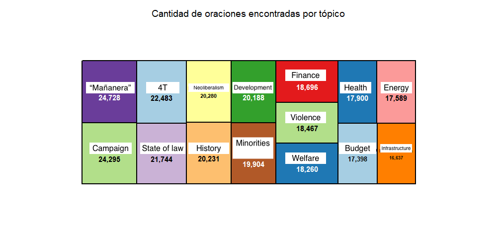
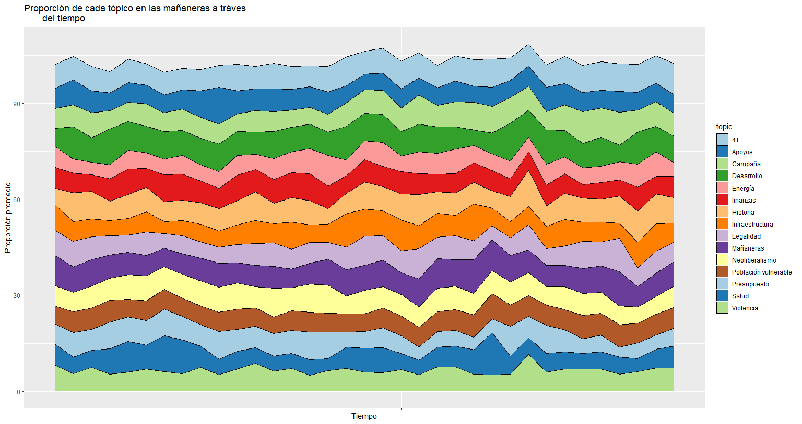
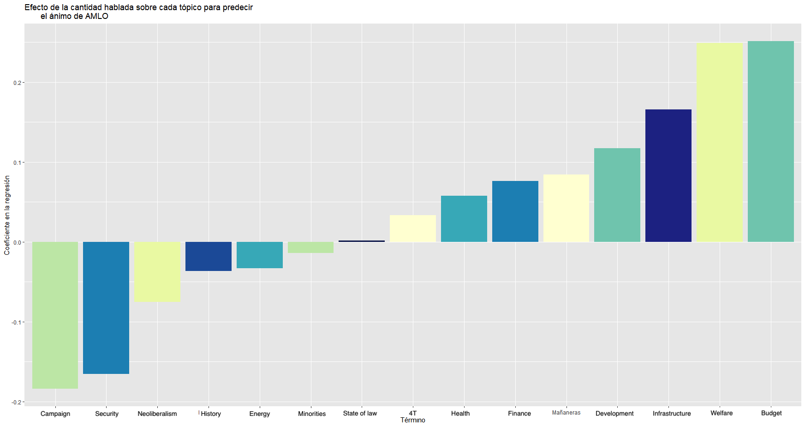
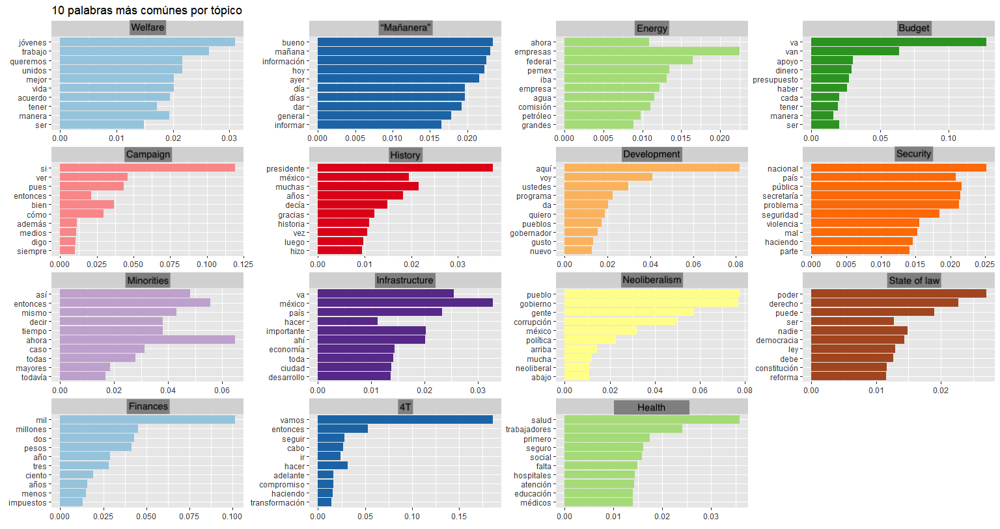

Columns · Policy brief · Interactive tool · 2023–2024
Who gets the money: Nuevo León's revenue-sharing formula
Nuevo León shares part of its federal revenue with its 51 municipalities through a formula written into state law. We suspected the formula was sending the money to the municipalities that were already rich, and the data confirmed it. Half of the formula's weight goes to how much property tax each municipality collects. A wealthy municipality, with valuable homes and few abandoned ones, collects more, so it receives more from the state. A poorer one, with cheaper homes and more of them abandoned, collects less and receives less. The result is a vicious cycle. In 2023 San Pedro Garza García received about 11,300 pesos per resident and El Carmen 469. In the same metropolitan area, one municipality can spend public money on dog parks while its neighbor can't pay for basic sanitation.
I put together the formula's coefficients and five years of payments for every municipality, rebuilt the formula in R and built a simulator so anyone can change the weights and see who wins and who loses. I wrote about the findings in two newspaper columns and in a policy brief.
Disclosure: when I wrote the columns I was Secretary of Finance of Juárez, Nuevo León, one of the peripheral municipalities the formula shortchanges. The columns were published in El Horizonte (Monterrey) in early 2024. The original links are no longer online, so the PDFs below show the text as submitted.
Read & run
- ColumnColumn 1: a middle ground — who should get the money? English · Spanish original (PDF)
- ColumnColumn 2: how the gap between municipalities widened English · Spanish original (PDF)
- BriefPolicy brief: the revenue-sharing formula and the simulator English · Spanish original (PDF)
- MethodSimulator methodology Spanish, 7 pp. Defines the three coefficients (collection efficiency, population and territory, social needs), the 2022 transitional rule and the compensation mechanism, and how the simulator recalculates each municipality's share.
- CodeR / Shiny source and data
Data project · Text analysis · 2021
How much does the president talk about violence?
In 2021 violence in Mexico was, as so often, very high, and it was one of the public's top concerns. President López Obrador spoke to the press for hours every weekday morning in his mañaneras. We wanted to know how much of that time he spent on violence. We scraped every transcript up to August 2021, kept only the president's own words, about 213,000 sentences, and used a topic model to sort them into 15 subjects.
Violence ranked sixth from the bottom, with about 18,500 sentences. The president spoke more about electoral campaigns, his own political movement, history and neoliberalism than about violence, health or infrastructure. His talks centered more on politics than on public safety.
This was a class project, done before large language models were available. Today the same question could be answered with much richer tools, but the basic approach still holds.
How it was done
- Data. All transcripts were scraped from the presidency's website with R (
rvest,httr), and the president's turns were separated from reporters' questions. The text was split into sentences. - Topics. After removing Spanish stopwords, an LDA model (Gibbs sampling, k = 15) grouped sentences into topics. We named each topic by reading its most frequent words (chart below).
- Tone. Words were scored with a Spanish version of the AFINN lexicon (−5 to +5) and summed per press conference. Dictionary methods miss sarcasm and context, so the tone measure is a rough signal, not a reading of the president's mood.
- Regression. We regressed daily tone on each topic's share of the conference. It shows association, not cause.
- Team. Done with classmates in a data-science course at Tecnológico de Monterrey (fall 2021).




Code
Peer-reviewed research · Machine learning · 2025
Imputing informal workers for transportation modeling in Latin America
We had two surveys. Mexico's national employment survey (ENOE) tells us who works informally. Monterrey's origin-destination survey tells us how people move around the city. We wanted to know how informal workers move, but the mobility survey has no informality question. So we trained machine-learning models on the employment survey, using the characteristics both surveys share, and predicted which workers in the mobility survey were informal. Gradient-boosted trees did best, with about 78% accuracy. The results can feed transport models that test how informal workers would respond to new infrastructure.
Award · Survey microdata · 2021
Measuring housing quality and satisfaction in Mexico
I led the team that won first place in Infonavit's national economics prize, which came with more than US$8,000 in prize money. Using UN-Habitat's definition of adequate housing, we built an index from INEGI's National Housing Survey to show each state's strengths and weaknesses: one state may have poor access to water, another poor building materials. The idea behind it was simple. What isn't measured can't be fixed.
- EssayWinning essay Spanish, 19 pp.
- PressTec de Monterrey coverage of the award
About
Background
I'm a Master of Public Policy candidate at Yale's Jackson School of Global Affairs, where I focus on AI policy and information integrity. I graduate in May 2027. Before Yale I earned two degrees at Tecnológico de Monterrey: one in economics, and one in government and public transformation with a concentration in data science.
I've spent four years working with data in Mexican local and state government, at the UN Development Programme and in academic research. In government I directed Nuevo León's dual-education program, which serves more than 10,000 students, and I designed and taught an introductory R course for data-science undergraduates.
I was born in Mexico and grew up in Costa Rica, where I first wrote for a local newspaper at 15. I work in Spanish and English.
Tools: R (tidyverse, sf, Shiny, tidytext, rvest), machine learning (gradient boosting, random forests), causal inference, QGIS, Tableau, Excel, Git, web scraping, government survey microdata (INEGI).
Contact